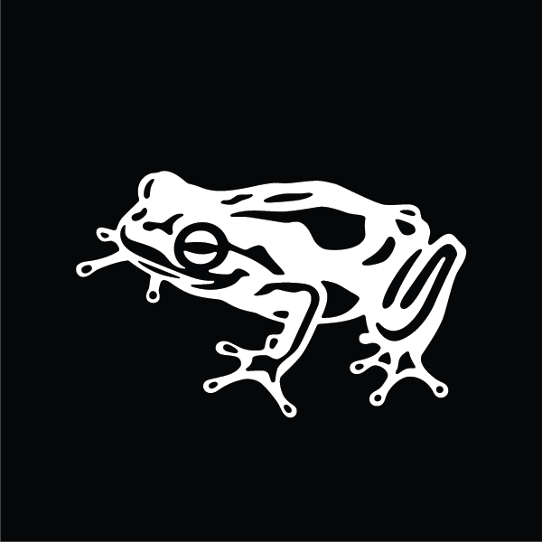

Nikhil Rajapuram
Healthcare Specialist, frog
Nikhil Rajapuram is a visiting Healthcare Specialist at frog and UCSF 4th Year Medical Student. As a Healthcare SME, Nikhil brings a clinical lens to frog’s Healthcare practice. He is currently a research fellow applying HCD to understand burnout in medical students and residents. He will graduate UCSF School of Medicine in 2021 and continue to specialize in Pediatrics with a focus in Cardiology.
Nikhil Rajapuram is a visiting Healthcare Specialist at frog and UCSF 4th Year Medical Student. As a Healthcare SME, Nikhil brings a clinical lens to frog’s Healthcare practice. He is currently a research fellow applying HCD to understand burnout in medical students and residents. He will graduate UCSF School of Medicine in 2021 and continue to specialize in Pediatrics with a focus in Cardiology.